English through television · Season 1, Episode 3: “A Fate Worse Than Death”
📚 “Mind Your Language”: Idioms, Malapropisms, and the Fine Art of Surviving Night School
An English lesson hidden inside a 1970s British sitcom — everyday spoken English, pronunciation traps, and the joyful art of getting things hilariously wrong.
🎮 Now playable: “Mind Your Language” — Vocab Arcade
This lesson has grown a twin: a retro night-school arcade where every glorious mistake from the sitcom becomes a level. Five “reels” of tape — one per mechanic — are all unlocked from the very start, so you can load them in any order, replay them freely, and eject mid-level without losing a single point.
- Roll Call Rally — multiple-choice questions with live reactions from Giovanni, Juan, Max, and the rest of the class.
- Real or Delusion? — statement cards on a countdown: judge the facts, keep the streak alive, stack the multiplier.
- Homework Scam Bureau — repair Giovanni’s “10p homework” by filling in the blanks; wrong words bounce back with a shake and cost points.
- Slang & Simile Exchange — match idioms to their true meanings; correct pairs lock green and cannot be reused.
- The Final Bell — a timed bonus round over everything above, with streak multipliers and a time bonus at the buzzer.
Runs in the browser, nothing to install · sound is synthesized live and mutable · keyboard support (arrows, Esc) · progress is saved in your browser only.
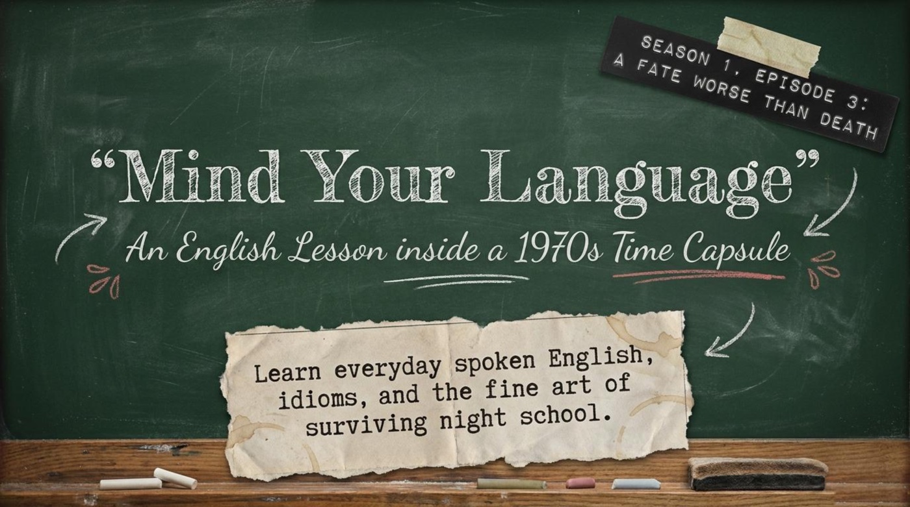
Between 1977 and 1986, one of Britain’s most beloved sitcoms never left a classroom. Mind Your Language followed a group of adult immigrants in a London night school as they wrestled with grammar, slang, and one another — and its comedy engine was language itself. The lesson material built around Season 1, Episode 3, “A Fate Worse Than Death,” introduces the series as “An English Lesson inside a 1970s Time Capsule” and sets a bold promise: “Learn everyday spoken English, idioms, and the fine art of surviving night school.”
It is worth noticing what makes this material special for learners. Every joke in the show is a language lesson in disguise, because the laughter grows out of real, documented learner errors — mixed-up words, tripped-over sounds, and invented grammar rules. The material turns that comedy into a structured study plan, complete with a cheat sheet of idioms, a grammar case study, and an end-of-term examination. Reading it feels less like homework and more like eavesdropping on the most entertaining English class in London.
🎬 Period 1 · Content and Context: A Classroom Where Every Mistake Becomes a Lesson
The material opens on a corkboard of pure 1970s atmosphere. A yellowed notice announces “L.E.A. Adult Education Classes — English for Foreigners,” and the historical frame is set out plainly: “Broadcast from 1977 to 1986, Mind Your Language captured a changing, multicultural Britain.” The premise is described with equal clarity: “The premise is simple: a diverse group of adult immigrants gathers in a London classroom to learn English.”
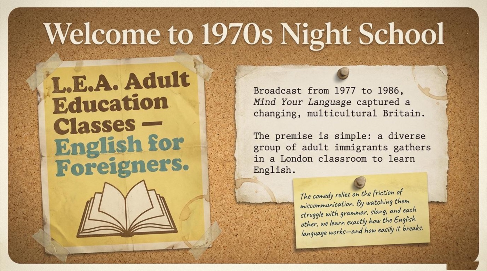
The educational heart of the show is stated openly on the very next note: “The comedy relies on the friction of miscommunication. By watching them struggle with grammar, slang, and each other, we learn exactly how the English language works—and how easily it breaks.” The key point is that errors are not embarrassing footnotes here; they are the entire curriculum. Learners who watch the episode with that idea in mind receive a free masterclass in exactly the places where English bites back.
👩🏫 The Master and the Mistress
Two teachers hold the classroom together. Mr. Brown is introduced as “The long-suffering, well-meaning instructor. His primary job is decoding his students’ mistakes before chaos ensues.” Facing him is Miss Courtney, “the strict, skeptical principal.” The material preserves one perfect exchange that shows both the comedy and the correction in a single breath:
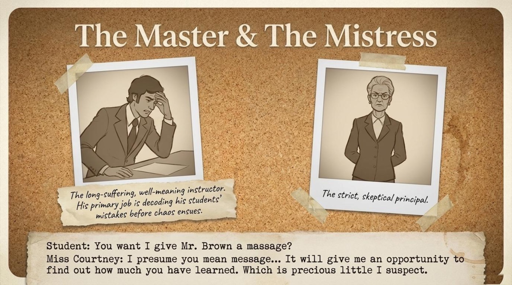
StudentYou want I give Mr. Brown a massage?
Miss CourtneyI presume you mean message… It will give me an opportunity to find out how much you have learned. Which is precious little I suspect.
Notice how much teaching happens in those two lines. A single vowel sound separates a kind note (message) from a kneading of shoulders (massage), and Miss Courtney’s dry reply models the polite, slightly merciless correction every learner eventually receives. The slip is a textbook malapropism — a similar-sounding wrong word — and it is the first entry in the material’s error catalogue.
🌍 The Students: A Map of Learner Personalities
The class roster doubles as a field guide to learner types. Giovanni (Italy) is “The Opportunist,” announcing: “Hockay! Who wants the homework! Only 10p each.” Ali (Pakistan) is “The Salesman,” with the proudly mangled line: “I’m a travelling salesman! I go round knicking the doors.” — a line the material quietly corrects with a red note reading “Knocking.” Juan (Spain) is “The Confused Optimist”: “Por favor? … In my country Spain, most of the people are Roman Catalyst.” Max (Greece) is “The Helpful Friend”: “Kalispera everybodies! Sure, anything you want.”
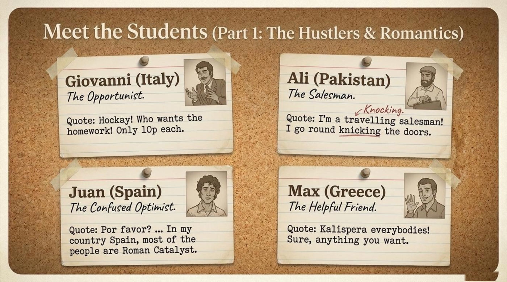
The second half of the roster centers on Ranjeet (India), “The Dramatic Traditionalist.” The plot focus is summarized in the material: “Ranjeet is desperately trying to escape an arranged marriage to Surinder, who he claims is looking like elephant from the front also.” His panicked cry — “I am up the creek without a puddle!” — becomes the episode’s signature idiom failure. Around him orbit Anna (Germany), “the diligent rule-follower” whose trademark is a cheerful “Danke!”; Taro (Japan), “the literal translator”; and Jamila (India) with Su-Lee (China), “quiet observers who occasionally deliver punchlines.”
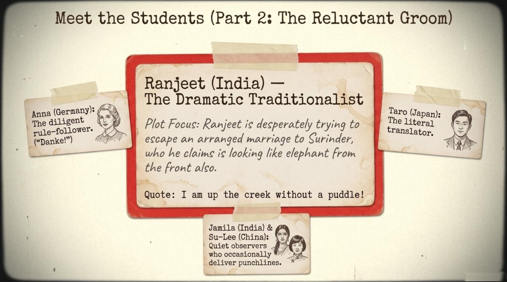
📌 Remember that these caricatures serve a pedagogical purpose beyond comedy. Each character embodies a recognizable learner strategy — hustling through, translating word for word, over-optimistically pattern-matching — and every viewer can locate their own habits somewhere on that corkboard.
🧭 The “Lost in Translation” Matrix
The material sorts the class’s disasters into three neat columns under the title “The ‘Lost in Translation’ Matrix.” The first column, Malapropisms (similar-sounding wrong word), records Juan confusing “Catholic” with “Roman Catalyst,” and the classroom-famous “I give Mr. Brown a massage” instead of “message.” The second column, Pronunciation Traps, captures Max reading a headline about listening devices — “Hamerican Embassy bugged” — as “bugg’d,” and Juan reading “rates” (local taxes) as “London rats.” The third column, Invented Grammar / Prefixes, documents students deducing that if someone is not alive, they must be “not alived,” and Ali selling “undertrousers” instead of underpants.
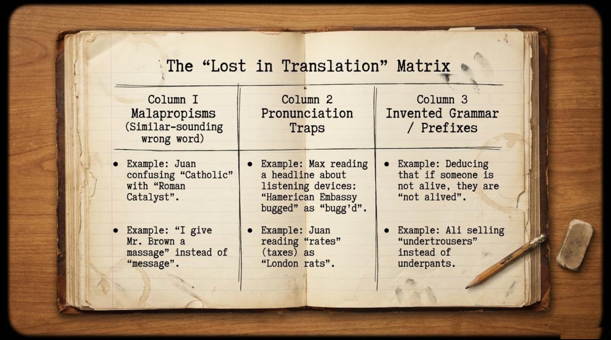
📒 Grammar in the Wild: The Homework Scam
The material’s grammar case study is a small crime story. The context is set with dry precision: “Giovanni sells pre-completed homework to the class for 10p. Mr. Brown realizes five students submitted identical, flawed work.” The flawed homework asks students to explain what is wrong with the sentence “My dogs is in the garden,” and the class’s identical written answer is a masterpiece of avoidance: “I do not have a garden.”
The material extracts the real lesson in a red box: “The Lesson: Subject-Verb Agreement. The students focused on factual reality rather than structural grammar. If the subject (‘dogs’) is plural, the verb must be plural (‘are’).” The students answered the question nobody asked. They defended the truth of their gardens while ignoring the structure of the sentence — the exact opposite of what an examiner rewards. 🎓 Mr. Brown’s official job description — “decoding his students’ mistakes before chaos ensues” — has never looked more necessary.
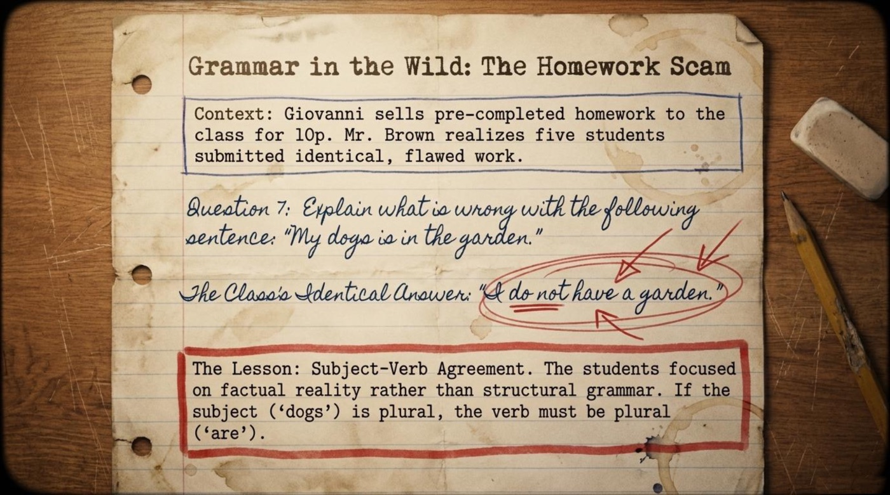
Marked ✔ · Sees the point
💡 Period 2 · Vocabulary and Language Takeaways
The episode’s cheat sheet splits its treasure into two lists — Idioms & Slang and Tricky Vocabulary — and every entry earns its place through a memorable on-screen disaster. The six key terms below follow the same format: the literal picture, the figurative meaning, the example from the material, and the material’s own definition.
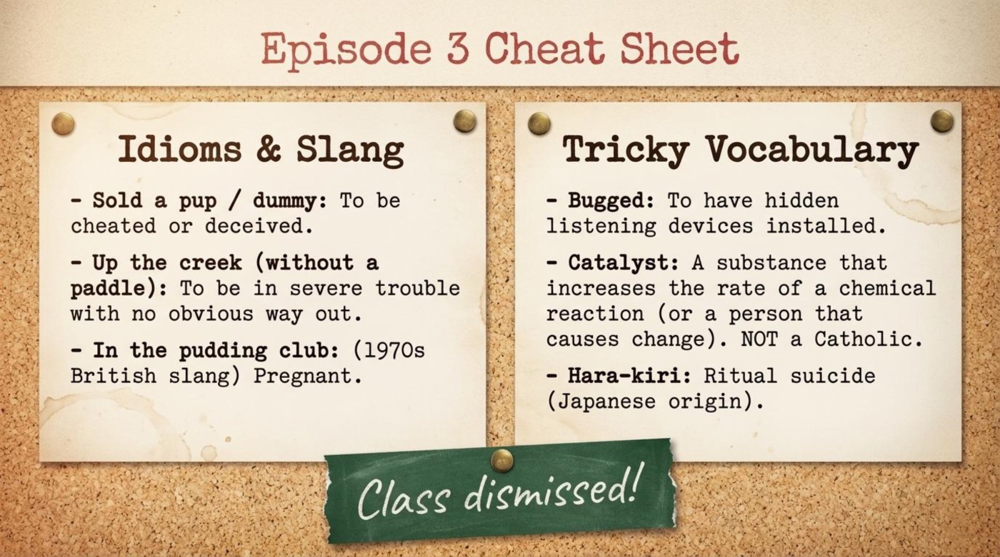
📌 sold a pup / dummy — idiom
- Literal picture: handing over money for a puppy (or a worthless dummy) and walking away with a terrible bargain.
- Figurative meaning: to be cheated or deceived — usually by a deal that is not what it promised to be.
- Example from the material: the class dissects the newspaper headline “PRIME MINISTER SOLD A PUP.” Juan gets lost in the logic and concludes: “… Newspaperman is a big-a liar.” His summary is accidentally correct — the idiom does imply a liar at work.
- How the material explains it: “Sold a pup / dummy: To be cheated or deceived.” The definition is short because the joke already did the teaching: nobody in that classroom believes a prime minister went shopping for an actual dog.
📌 up the creek (without a paddle) — idiom
- Literal picture: drifting in a boat on a narrow creek with nothing to steer it.
- Figurative meaning: to be in severe trouble with no obvious way out.
- Example from the material: facing his arranged marriage, Ranjeet wails: “I am up the creek without a puddle!” The situation is genuinely dire; the vocabulary is creatively ruined.
- How the material explains it: “Up the creek (without a paddle): To be in severe trouble with no obvious way out.” Swapping paddle for puddle shows how a single sound can derail even a well-memorized phrase — exactly the trap the matrix warns about.
📌 in the pudding club — 1970s British slang
- Literal picture: a club whose members are somehow made of dessert.
- Figurative meaning: pregnant — a coy, old-fashioned euphemism.
- Example from the material: the cheat sheet lists it as authentic 1970s British slang from the episode’s tangled love plots, where secrets, engagements, and unexpected consequences pile up fast.
- How the material explains it: “In the pudding club: (1970s British slang) Pregnant.” The entry demonstrates how English wraps delicate topics in cozy, food-flavored metaphors — and why learners need era context to decode them.
📌 bugged — verb, past participle
- Literal picture (the decoy): the informal meaning of being annoyed — or a room full of insects.
- Contextual meaning: fitted with hidden listening devices for spying.
- Example from the material: Max reads a headline about surveillance aloud — “Hamerican Embassy bugged” — and the class hears “bugg’d,” dragging an espionage story into pure confusion.
- How the material explains it: “Bugged: To have hidden listening devices installed.” One syllable, two worlds: the word shows how a pronunciation trap can invert the entire meaning of a news story.
📌 catalyst — noun
- Literal meaning: a substance that increases the rate of a chemical reaction.
- Figurative meaning: a person or thing that causes change.
- Example from the material: Juan declares with total confidence: “In my country Spain, most of the people are Roman Catalyst.” He reaches for Catholic and lands one syllable away.
- How the material explains it: “Catalyst: A substance that increases the rate of a chemical reaction (or a person that causes change). NOT a Catholic.” That final, exasperated clarification is the fastest malapropism lesson in the entire material.
📌 hara-kiri — noun, borrowed from Japanese
- Literal meaning: ritual suicide (Japanese origin).
- Contextual meaning: in the show, a stock reference for dramatic, self-destructive behavior — the kind of borrowed word 1970s comedy reached for constantly.
- Example from the material: the cultural context section lists “jokes about hara-kiri” among the era’s broad national stereotypes that modern viewers hear very differently.
- How the material explains it: “Hara-kiri: Ritual suicide (Japanese origin).” The entry is a reminder that borrowed words carry borrowed cultures, and that respectful usage depends on knowing where a word comes from.
These six items are not random decorations; they are the engine of the episode. Deception (sold a pup), desperation (up the creek), secrecy (bugged), transformation (catalyst), taboo (in the pudding club), and dramatic exits (hara-kiri) map directly onto the episode’s plot about arranged marriages, hidden agendas, and very public mistakes.
Vocabulary passed · 10p well spent
🔍 Period 3 · Deeper Meaning: Metaphors and Symbols
🐶 The Sold Pup: The Anatomy of a figure of speech
The material dissects one expression with surgical care, using the headline “PRIME MINISTER SOLD A PUP” as its specimen. The literal translation is illustrated with touching innocence — “Buying a real dog with money” — while the figurative meaning is stamped in bold: “(To be cheated or deceived),” or as the illustration puts it, “Tricked or swindled.”
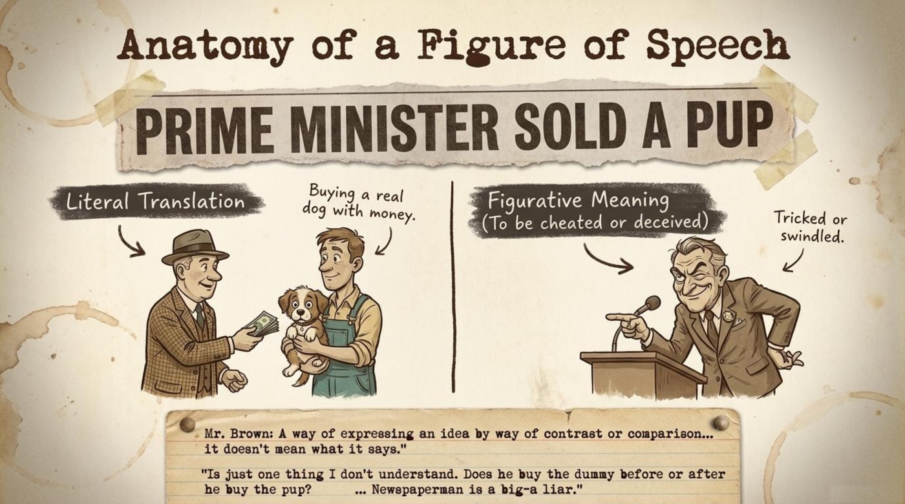
Mr. Brown, at the blackboard“A way of expressing an idea by way of contrast or comparison… it doesn’t mean what it says.”
Juan’s reaction completes the lesson by showing what happens when a learner processes idioms literally: “Is just one thing I don’t understand. Does he buy the dummy before or after he buy the pup? … Newspaperman is a big-a liar.” Juan’s confusion is the joke, but his conclusion is the smartest sentence in the room — the idiom really does describe a deception. The symbol teaches a double truth: idioms must be learned as whole units, and literal translation is a trap with a punchline.
⚡ The Simile Equation
A chalkboard in the material presents a formula with mathematical confidence: “As [Adjective] as a [Noun].” The green checks go to the classics — “As blind as a… bat” (supplied by Su-Lee), “As quick as… lightning,” and “As smooth as… a baby’s bottom.” The red crosses mark the disasters: “As deaf as a… Postman!” (Max) — correction: Post, “because posts cannot hear”; “As sly as a… Sikh!” (Ali) — correction: Fox; and “As drunk as a… Newt!” (Taro) — correction: Lord.
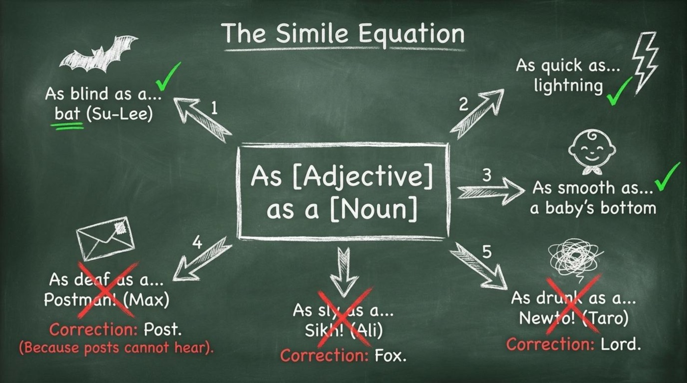
The significance of this formula is that it reveals similes as fixed cultural contracts. The grammar template is open — anyone can build a sentence with it — but native speakers only recognize a limited cast of nouns. Learning the template without learning the approved pairs is exactly how a helpful Greek student ends up deafer than a postman.
🚫 The Art of the Polite Refusal
One of the material’s most practical pages analyzes a scene of pure street economics. The Pitch: “Are you wanting one?” / “Only one pound 50p!” — illustrated with a shirt labeled “100% substandard.” From that pitch, the material maps three possible exits, and each one is a complete lesson in pragmatics:
- Path 1: The Gentle Let-Down — “No thanks, I don’t think that’s my size.” — (Polite, provides a soft excuse.)
- Path 2: The Direct Decline — “No, thank you.” / “I don’t want one, Ali.” — (Firm, clear boundary.)
- Path 3: The Ideological Rejection — “I not buy from Capitalist state where workers are exploited as cheap labour.” — (Direct, argumentative.)
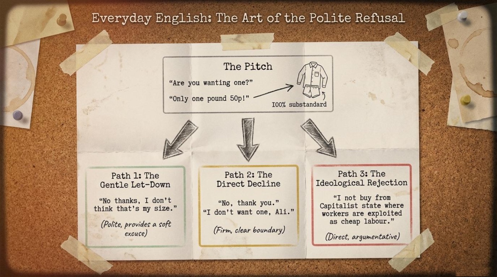
The symbol here is the substandard shirt itself: a cheap product offered with total confidence, standing in for every unsolicited offer life makes. The three paths teach that a refusal carries information beyond “no” — it signals distance, warmth, or hostility. Choosing the right path for the moment is a fluency skill no dictionary teaches, and the material hands the reader all three scripts ready to use.
🌍 The Classroom as a microcosm
The material closes its cultural analysis with unusual honesty. Under “Contextualizing the Era” it admits: “Mind Your Language relied heavily on broad national stereotypes that reflect 1970s attitudes—from jokes about hara-kiri to the intense rivalry between Indian and Pakistani characters, and Ranjeet referring to his fiancée as an ‘elephant.’” Then it delivers the counterweight: “The Underlying Message: While the characterizations are exaggerated by modern standards, the show’s core beats with warmth. The classroom represents a microcosm of unity; despite their differences, the students constantly band together to help each other navigate the shared struggle of a new language and culture.”
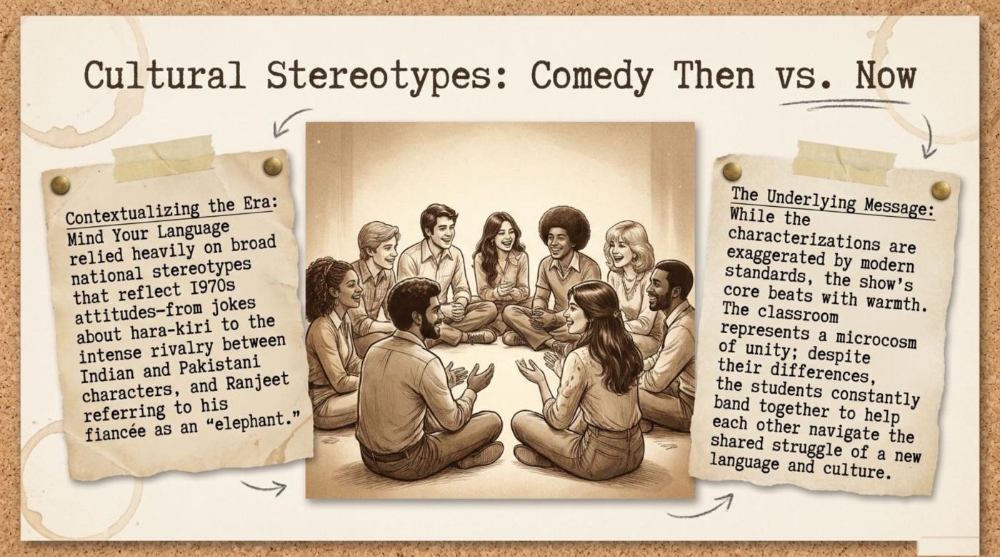
That microcosm is the deepest symbol in the material. A single London classroom holds eight nationalities, three continents, and every variety of learner error, yet it functions because the members share one struggle. For language learners, the message lands gently: the classroom — physical or virtual — is a place where mistakes are collective property, and solidarity is the best study aid ever invented.
Effort: excellent · conduct: noisy
📝 Period 4 · Comprehension Check: Your Own End-of-Term Examination
The lesson materials finish with an End of Term Examination (Class Activity) that challenges students to correct a student’s tense, decode Ranjeet’s mangled idiom, and discuss how the class reacts when Mr. Brown accidentally gets engaged to Surinder to save Ranjeet. The interactive quiz below follows the same spirit with eight questions drawn straight from the material — comprehension, vocabulary in context, one true/false item, and a fill-in-the-blank challenge. Instant feedback arrives after every answer, the score counter updates live, a report card with a letter grade waits at the finish line, and the “Watch it again” button resets the whole exam for another attempt. The class is watching.
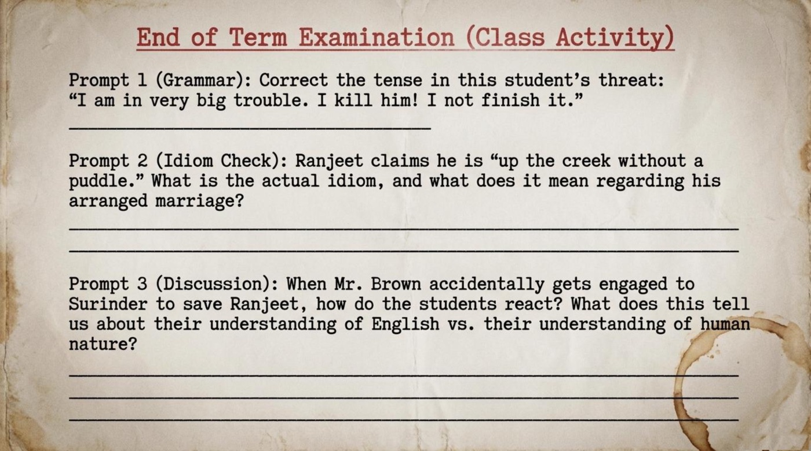
End-of-term check · 8 questions · instant feedback
Official Report Card · London Evening Institute
0/8
🌟 Conclusion: Fluency Is Connection
The material’s synthesis page states the thesis better than any review could: “Mind Your Language proves that fluency is not just about perfect grammar; it is about connection. The mispronunciations, malapropisms, and cultural clashes are not just jokes—they are the inevitable, joyful friction of people trying to understand one another.” Below it, the final message lands like a graduation speech: “Making mistakes is the most natural part of learning. True communication happens the moment we are willing to laugh at ourselves together.”
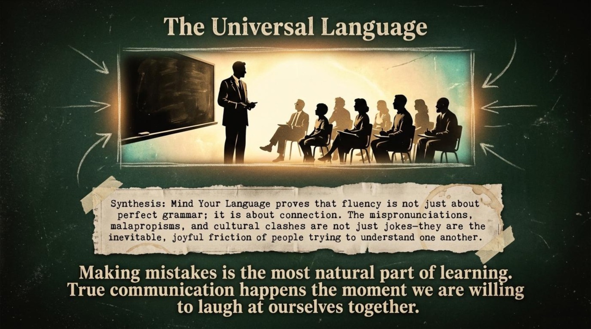
The main takeaway for language learners is liberating. Ranjeet’s puddle, Juan’s catalyst, and Max’s deaf postman were not failures of intelligence; they were the visible footprints of people moving bravely through a new language. The practical next steps are simple: rewatch Episode 3 and hunt for the six cheat-sheet terms in the wild, keep a three-column error matrix for one week, and rehearse all three refusal paths until “No, thank you” comes out with exactly the right temperature. Then close the notebook, laugh at one honest mistake, and remember that the classroom — like the show — always takes the next student.
…and the kettle is already on. ☕